Instalación R y Rstudio
1 Instructivo para instalar R y RStudio en Windows
1.1 ¿Qué son R y RStudio?
R es un lenguaje y un entorno de trabajo utilizado para realizar cálculos estadísticos, analizar datos y producir gráficos.
RStudio es un programa que facilita el uso de R mediante una interfaz más cómoda y organizada. Permite escribir código, ejecutar instrucciones, visualizar resultados, administrar archivos y crear gráficos.
Actualmente, RStudio es desarrollado por la empresa Posit, aunque el programa conserva el nombre RStudio.
Importante: R y RStudio son dos programas diferentes. Primero se debe instalar R y, posteriormente, RStudio.
1.2 Requisitos previos
Antes de comenzar, se recomienda verificar que:
- La computadora tenga Windows 10 o Windows 11.
- Se disponga de conexión a Internet.
- Se cuente con permiso para instalar programas.
- No haya otras instalaciones ejecutándose al mismo tiempo.
La versión actual de RStudio Desktop está diseñada para sistemas Windows de 64 bits y requiere que R se encuentre instalado previamente.
2 Parte I. Instalación de R
2.1 Ingresar al sitio oficial de R
Abrir un navegador de Internet, por ejemplo:
- Google Chrome;
- Microsoft Edge;
- Mozilla Firefox.
En la barra de direcciones escribir:
https://cran.r-project.org- Presionar la tecla Enter.
Se abrirá la página principal de CRAN, el repositorio oficial desde el cual se distribuye R.

2.2 Seleccionar la versión para Windows
En la página principal de CRAN:
- Buscar el apartado Download and Install R.
- Hacer clic en:
Download R for Windows
2.3 Descargar el instalador
En la nueva página:
- Hacer clic en:
baseEsta opción permite descargar la versión básica y completa de R.

- En la página siguiente, hacer clic en el enlace que comienza con:
Download R-
El nombre exacto del archivo dependerá de la versión disponible. Por ejemplo:
Download R-4.x.x for Windows- Esperar a que termine la descarga.
El archivo descargado tendrá extensión .exe y normalmente se guardará en la carpeta Descargas.
Se recomienda descargar siempre la versión más reciente disponible en el sitio oficial.
##Ejecutar el instalador de R
- Abrir la carpeta Descargas.
- Buscar el archivo descargado. Su nombre será similar a:
R-4.x.x-win.exe- Hacer doble clic sobre el archivo.
Windows puede mostrar una ventana con la pregunta:
¿Quieres permitir que esta aplicación haga cambios en el dispositivo?- Seleccionar Sí.
2.4 Seleccionar el idioma
Al comenzar la instalación aparecerá una ventana para seleccionar el idioma.
- Elegir Español.
- Hacer clic en Aceptar.

2.5 Aceptar la información de la licencia
Se mostrará información sobre la licencia de uso de R.
- Leer la información.
- Hacer clic en Siguiente.
R es software libre y puede utilizarse gratuitamente.
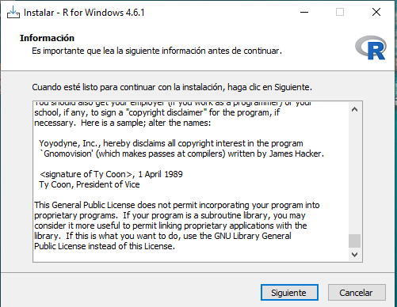
2.6 9. Elegir la carpeta de instalación
El instalador propondrá una ubicación similar a:
C:\Program Files\R\R-4.x.xSe recomienda mantener esta ubicación.
- No modificar la carpeta propuesta.
- Hacer clic en Siguiente.
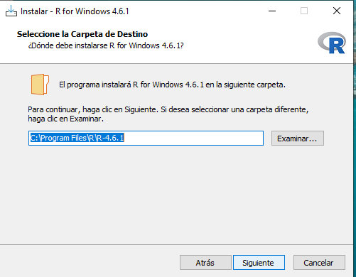
2.7 Seleccionar los componentes
El instalador mostrará los componentes que se instalarán.
- Mantener seleccionadas las opciones predeterminadas.
- Hacer clic en Siguiente.
En las computadoras actuales se instalará la versión de R para sistemas de 64 bits.
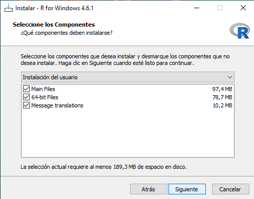
2.8 Configurar las opciones de inicio
Cuando el instalador pregunte si se desean personalizar las opciones de inicio:
- Seleccionar:
No- Hacer clic en Siguiente.
Esta opción mantiene la configuración recomendada para usuarios principiantes.
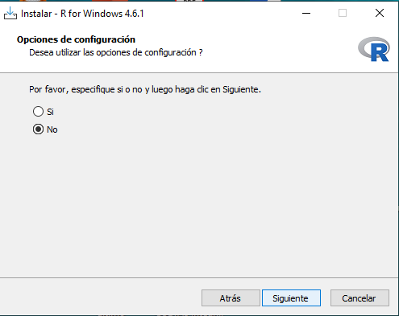
2.9 Crear accesos directos
El instalador permitirá seleccionar algunas tareas adicionales.
Se recomienda mantener seleccionadas las siguientes opciones:
- Crear un acceso directo en el escritorio.
- Crear un acceso directo en el menú Inicio.
- Registrar el número de versión.
- Asociar los archivos
.RDatacon R.
Luego, hacer clic en Siguiente.
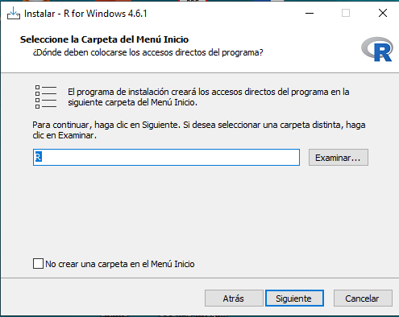
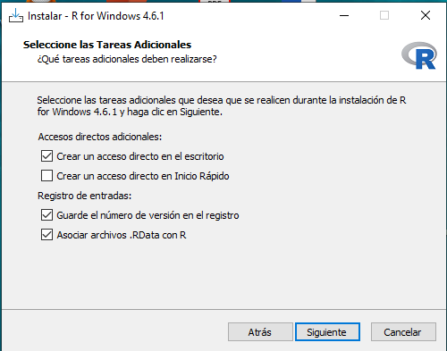
2.10 Finalizar la instalación de R
El programa comenzará a copiar los archivos necesarios.
- Esperar a que finalice el proceso.
- Hacer clic en Finalizar.
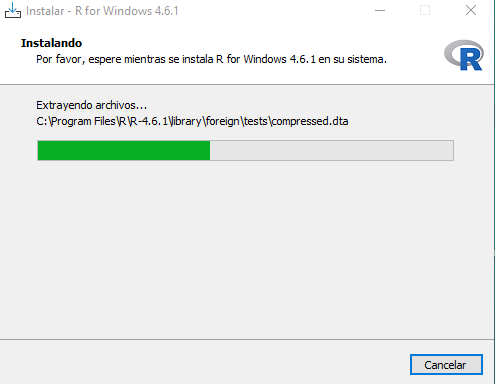
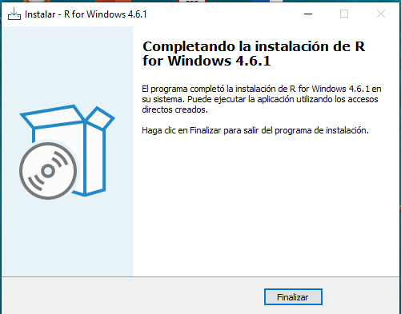
2.11 Comprobar que R funciona correctamente
- Abrir el menú Inicio de Windows.
- Buscar la aplicación R.
- Hacer clic para abrirla.
Se mostrará una ventana denominada R Console.
En la consola, junto al símbolo >, escribir:
2 + 2Presionar Enter.
El resultado esperado es:
[1] 4Si aparece este resultado, R se instaló correctamente.
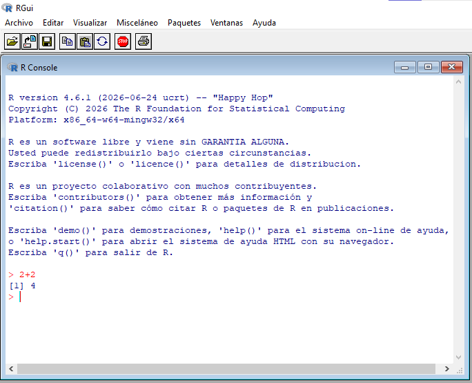
Después de comprobar la instalación, se puede cerrar la ventana de R.
3 Parte II. Instalación de RStudio Desktop
RStudio es desarrollado por la empresa Posit. La edición de código abierto de RStudio Desktop puede descargarse gratuitamente para Windows.
3.1 Ingresar al sitio oficial para descargar RStudio
- Abrir nuevamente el navegador.
- Ingresar a:
https://posit.co/download/rstudio-desktop/- Hacer clic en el botón de descarga para Windows.
El sitio normalmente detectará automáticamente el sistema operativo y ofrecerá un archivo con un nombre similar a:
RStudio-2026.xx.x-xxx.exeEl número puede variar según la versión disponible.
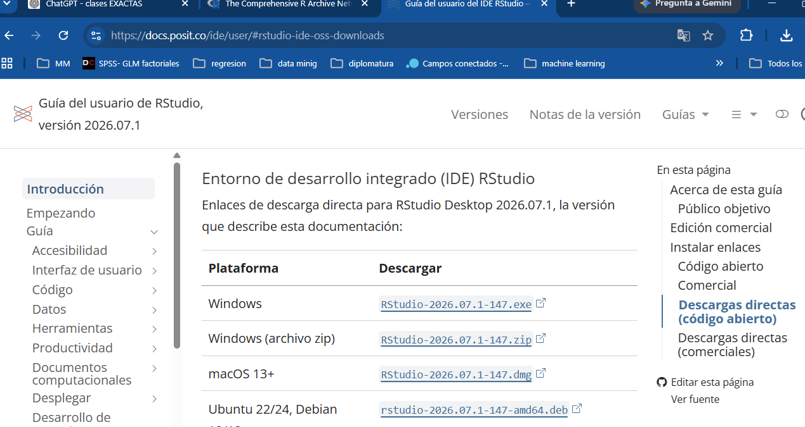
La descarga oficial para Windows se distribuye mediante un archivo ejecutable .exe.
3.2 Ejecutar el instalador de RStudio
- Abrir la carpeta Descargas.
- Buscar el archivo de instalación de RStudio.

- Hacer doble clic sobre el archivo.
Si Windows pregunta si se permite que la aplicación realice cambios:
- Seleccionar Sí.
- Se abrira el instalador de RStudio
3.3 Iniciar el asistente de instalación
Aparecerá la ventana del asistente de instalación de RStudio.
- Hacer clic en Siguiente.
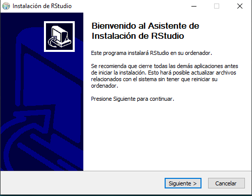
3.4 Seleccionar la carpeta de instalación
El instalador propondrá una carpeta similar a:
C:\Program Files\RStudio- Mantener la ubicación sugerida.
- Hacer clic en Siguiente.
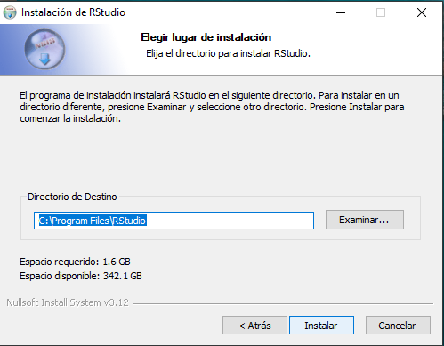
3.5 Seleccionar la carpeta del menú Inicio
El programa propondrá crear un acceso dentro del menú Inicio.
Mantener el nombre RStudio.
Hacer clic en Instalar.
3.6 Finalizar la instalación de RStudio
Esperar mientras se copian los archivos.
Cuando aparezca el mensaje indicando que la instalación se completó:
- Hacer clic en Terminar.
El instalador crea un acceso a RStudio y registra el programa entre las aplicaciones instaladas en Windows.
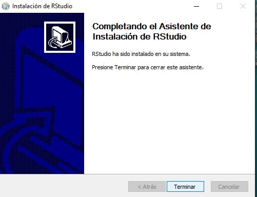
4 Parte III. Primera ejecución de RStudio
##Abrir RStudio
Para iniciar el programa:
- Abrir el menú Inicio.
- Escribir:
RStudio- Hacer clic sobre la aplicación.
También puede aparecer un acceso directo en el escritorio.
5 Lista de comprobación final
Antes de comenzar las actividades, verificar que se hayan completado los siguientes pasos:
6 Sitios oficiales
6.1 Descarga de R
https://cran.r-project.org6.2 Descarga de RStudio Desktop
https://posit.co/download/rstudio-desktop/Para evitar problemas de seguridad o versiones modificadas, se recomienda descargar ambos programas únicamente desde sus páginas oficiales.